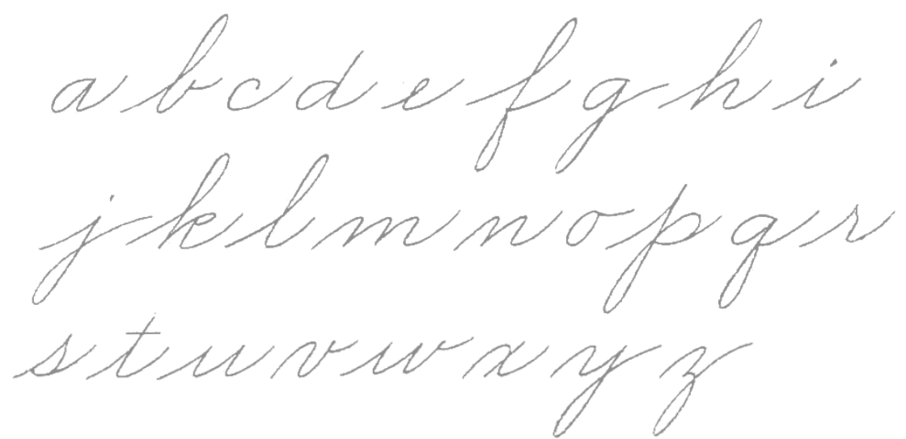
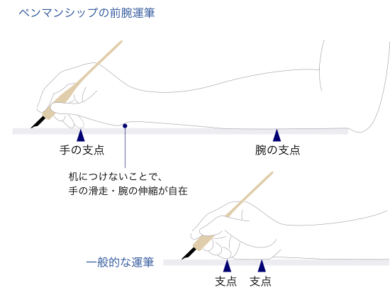
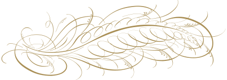
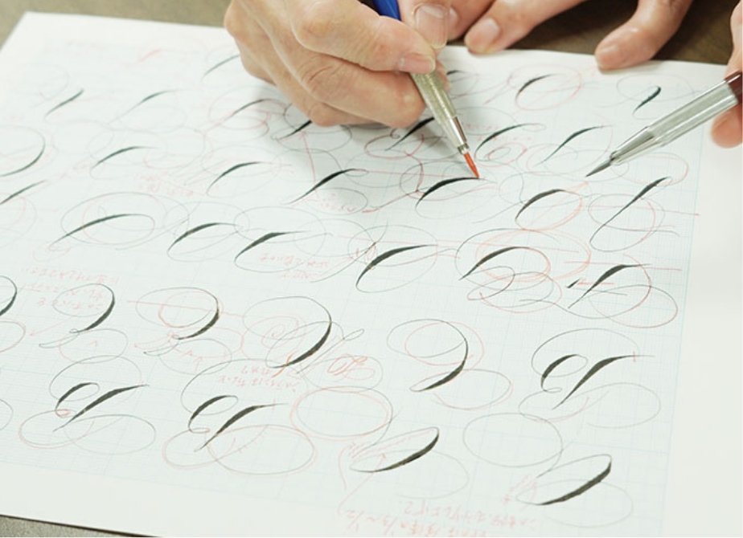
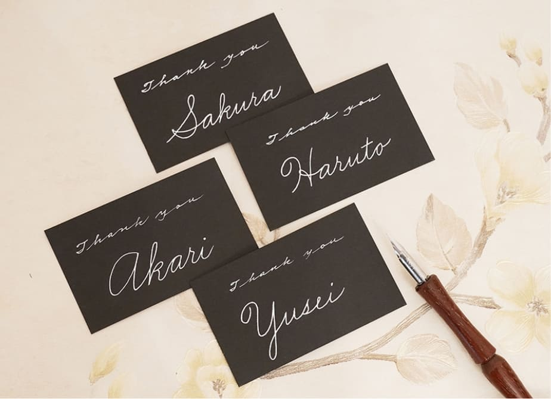
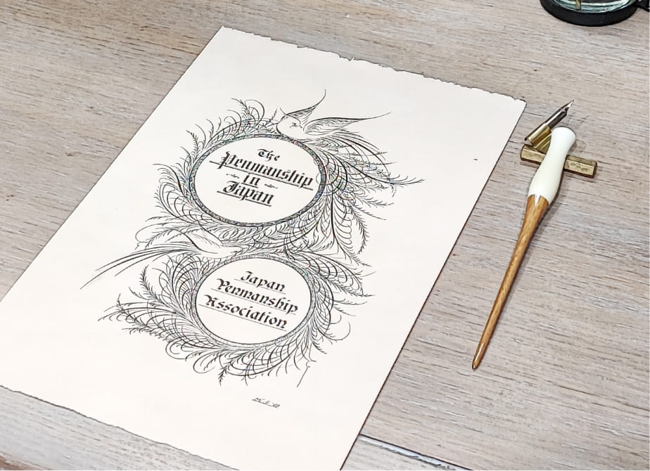

Penmanship
ペンマンシップについてペンマンシップは19世紀にアメリカで生まれた、美しく華やかなアルファベットや装飾を、
インクとペンにより紙に表現する手書き文字のアートです。
文字を正確に美しく書く
ペンマンシップとは、学校等で習う「英字での習字」のことです。 日本の習字に楷書や行書といった書体があるように、ペンマンシップにも実用（商業）的な書体・装飾的な書体・専門的な書体の分野に分けられ、それぞれに筆記具が用意されています。 19世紀のアメリカで、会社等の文書に用いる実用（商業）的な用途の目的で筆記体（ビジネスライティング）が興り、教育機関を通して発展したことから、現在でもペンマンシップは読みやすい正確さで、美しく書くことが求められています。

日本のペンマンシップ
日本では、明治時代の終わりにアメリカで本格的にペンマンシップを学んだ吉田一郎氏によってその歴史が始まりました。吉田氏が紹介した書体の中でも、筆記体（ビジネスライティング）は1947年から2002年頃まで英語の教科書に掲載されていました。現在の教育機関では主にブロック体での学習が行なわれていますが、授業で筆記体を習ったという方もいるのではないでしょうか。

ペンマンシップと
カリグラフィー
ペンマンシップと同じく、美しい文字が書かれるものにカリグラフィーが挙げられます。どちらも現在は芸術的に美しい文字として用いられることが多いですが、ヨーロッパで主に写本の写字として発展したカリグラフィーに対して、ペンマンシップはアメリカの教育や実用の場面で発展したと言えるでしょう。 また、違いの1つに運筆方法が挙げられます。ペンマンシップはカリグラフィーに比べ、腕を大きく動かして書く（前腕運筆）ことで伸びやかな線を表現できることから、文字だけでなく装飾や絵も書かれることが特徴です。

Gallery
均一な細さで書く書体
線に強弱のある書体
大文字の装飾的なラインが特徴的な書体
格調高いゴシック体
美しいラインから生まれる表現
様々な書体と装飾を組み合わせた表現
Tools
Step
文字や絵を書く前に、楕円などを書いて手と腕の使い方のウォーミングアップをします。
Flourishingは線を伸びやかに書く練習にも最適な書体です。ポインテッドペン（ 先端が尖った金属製のペン先 ）をストレート または
オブリークホルダーに挿し込だ筆記具を使います。正しく腕を使うことにより伸びやかなラインを書き、鳥の向きやラインの方向によってペンを持ち変えたり、紙の向きを変えたしながら書き進めます。
鳥の周囲に羽などの装飾を加えることで、華やかな作品につながります。
アルファベットをきれいに書くにあたり、ペンの運び方（運筆）が非常に重要な要素となります。
書体によってペンや運筆は異なりますが、ゆっくりとペンを動かして書いた字は生気が感じられず、勢いが必要となります。また正確性も必要となるため、それを制御できるようになるために、まず、直線や楕円などで手と腕の使い方を徹底的に練習します。これらは初歩の段階だけでなく、文字を書く前のウォーミングアップとして、日々の練習の最初に行います。ブロードペンの書体から始めることもできます。
実際に文字を書く前に、その文字の造形・ラインが頭の中で再現できるまで、手本をしっかり見て暗記できていることは非常に重要です。続いて、頭の中の文字のイメージを最大限の集中力で運筆に気をつけながら再現します。まずは１文字ずつ、イメージが満足できる形に再現できるまで繰り返し練習します。そして、単語・文章へとステップを進めていきます。
自ら見直して修正していくだけでなく、添削してもらうことも上達への早道です。１つの書体を極めたり、さまざまな書体を習得したりして技術を高めることや、それらの文字の表情を組み合わせつつ紙面構成も工夫することで作品として仕上げることなども、自らを表現を高めるための大きな可能性となります。
History
これまで文字の歴史を積み重ねてきたヨーロッパでは、主にペン先に幅のあるブロードペン（Broad Pen）を使った線に厚みのある書体が書かれていました。線の太さに強弱をつけて表現する試みもあり、ペン先がとがったポインティッドペン（Pointed Pen）を用いて書かれたラウンドハンド（Roundhand）の書体が芽生えました。当時、躍進を続けていたイギリスの文書に用いられいたことからこの書体は各国に普及することとなりました。この頃から銅版印刷の技術が進歩し、銅版（Copper plate）によって手本は美しく印刷され、彫刻の技術が 書く技術をリードすることとなります。
19世紀末には、著名なペンマン等が学校の習字の先生向けの訓練機関を設立し、前腕運筆での書法を推進して広まった書体から装飾的な要素をなくしたことにより、一般的な筆記具でも書くことができるビジネスライティング（Business Writing）が興りました。 当初は商業字体としてビジネス向けに普及しましたが、現在でも手書きの実用的な「筆記体」として使用されています。
印刷技術が発展したヨーロッパでも、この頃ウィリアム・モリス（William Morris）が主導となるアーツ・アンド・クラフツ運動が起こり、これまでの手書き文字に目が向けられました。モリスの影響を受けたイギリスのカリグラファー・書体デザイナーである、エドワード・ジョンストン（Edward Johnston）等によって、再びブロードペンを使った手書きによる書体・書法が復活します（Calligraphic Revival）。その運動は、中世に用いられていたチャンセリー（Chancery）書体を使用する運動にまで発展し、アメリカのビジネスライティング（Business Writing）はこの流れを受けつつ、より一般的な実用書体としてビジネスや学校といった場で使われるようになりました。
文字を書くこと自体が少なくなってきている現在ですが、これまでの歴史が示すように、手書きの文化は続いています。心のこもった文字を書いてメッセージを渡すといった日常的な「伝達」手段や、芸術的な作品として「鑑賞」するなどそれぞれの楽しみ方で引き継がれています。

学習
ペンマンシップでは文字を正確に覚え、書くことが求められます。自ら研究したり、周囲の仲間から添削を受けたりすることで、正しい文字を美しく書くことにつながります。

伝達
親しい人との手紙から、席札や賞状などのフォーマルな場面まで、日常の身近な場面にペンマンシップの美しい文字を生かして楽しむことができます。

鑑賞
芸術的な作品として鑑賞することも多くあります。文字や紙面構成、用具用材、表装などがもたらす効果を楽しみます。